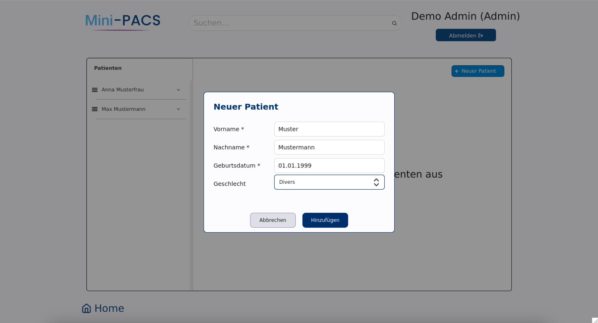
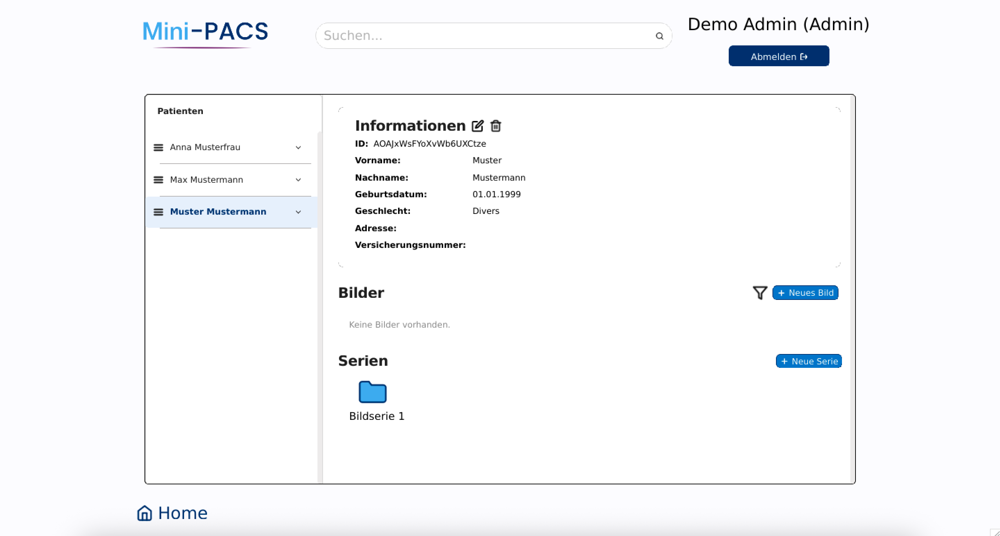
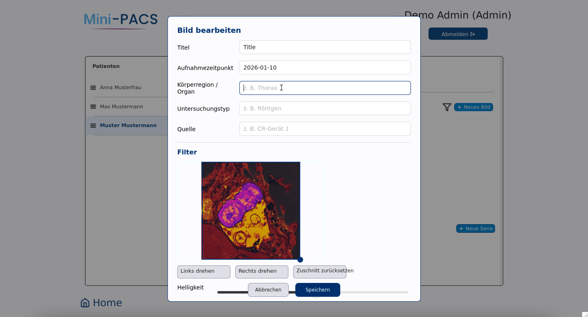
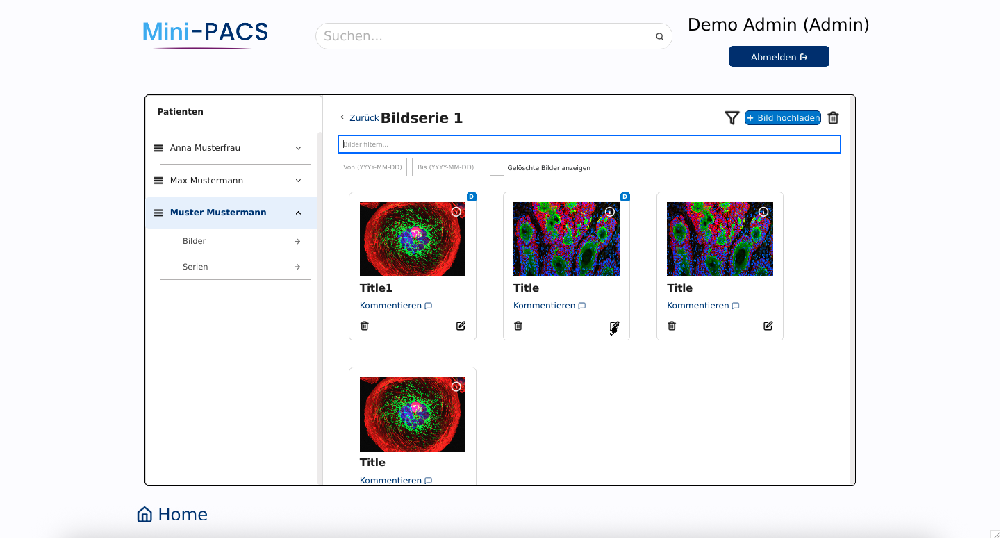
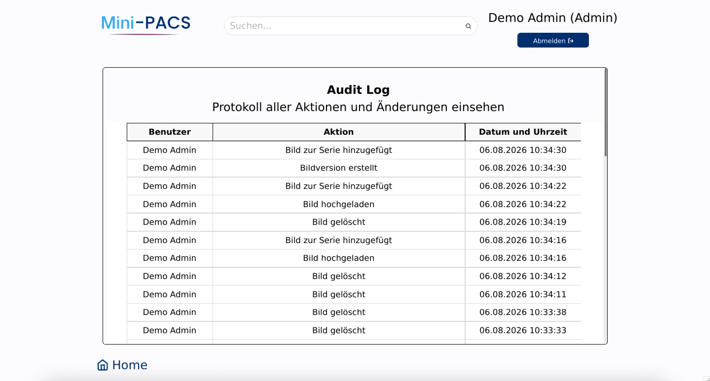
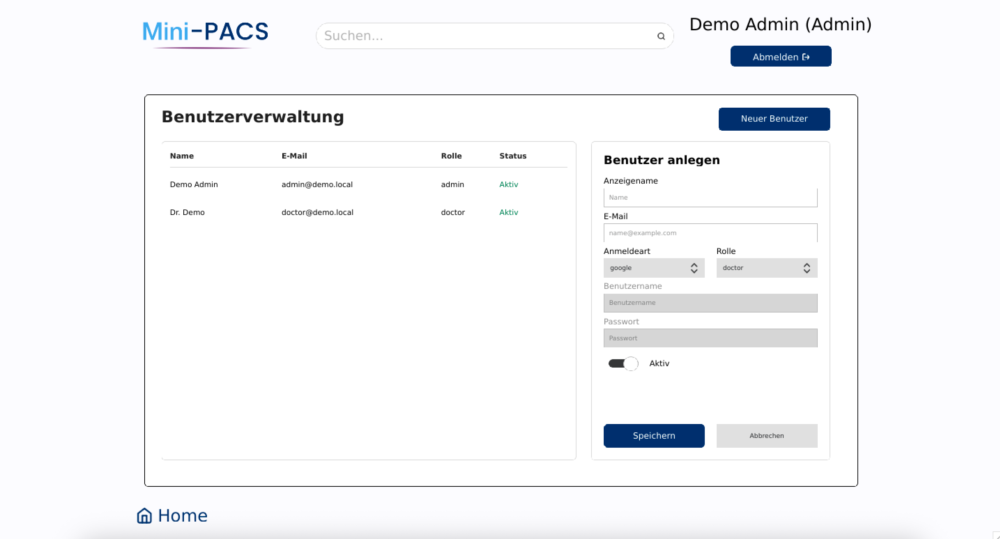

Patienten schnell anlegen und verwalten
Erstellen Sie neue Patienten und bearbeiten Sie Stammdaten zentral an einem Ort
Eine moderne Desktop-Anwendung zur Verwaltung medizinischer Bilddaten und Patientendaten
Projekt von Karina Patsaliuk, Matthias Krippner & Thomas Bejze
Die einfache Lösung für die Verwaltung von Patientendaten und medizinischen Bildern in kleinen Praxen
Jede:r Arzt/Ärztin sieht nur die eigenen Patient:innen. Administratoren verwalten das gesamte System.
Bilder werden Patient:innen eindeutig zugeordnet, mit Metadaten versehen und übersichtlich in Serien organisiert.
Alle relevanten Änderungen werden protokolliert und bleiben jederzeit nachvollziehbar.
Die wichtigsten Funktionen im Überblick – intuitiv, übersichtlich und speziell für den Einsatz in kleinen Praxen entwickelt

Erstellen Sie neue Patienten und bearbeiten Sie Stammdaten zentral an einem Ort

Patientendaten, Bilder und Bildserien sind übersichtlich in einer Ansicht zusammengefasst

Metadaten zu Bildern und Serien lassen sich direkt in der Anwendung anpassen und ergänzen.

Gruppieren Sie Bilder in übersichtlichen Serien für eine strukturierte und effiziente Verwaltung

Alle relevanten Benutzeraktionen werden automatisch mit Zeitstempel protokolliert

Ihre Daten bleiben lokal und sind jederzeit unter Ihrer Kontrolle
Enthalten:
Vollständiger Quellcode
Projektdokumentation
Präsentationsfolien
Installations- und Ausführungsskripte